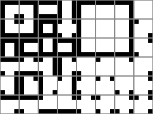
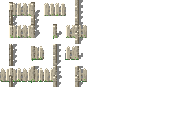
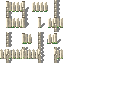
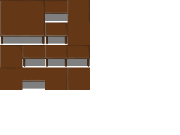

Autotiles
Autotiles, referred to in CDDA game code as "multitiles", are tiles that display differently depending on their relationship to other sprites in the group. Water is a classic example: drawing water as an autotile allows it to display as a single body with edges, instead of either individual little puddles, or a large blue expanse with no shoreline.

To simplify drawing these tiles, we use templates with 4x4 and 8x6 grids of all the tile boundary types in a predictable order. Transparency allows overlapping the same tiles on different backgrounds, so we don't have to redraw the water boundaries for dirt, grass, rock, etc. - we draw the water once, and the transparent edges allow it to overlap dirt, grass, rock, and so on.
The 4x4 template supports only current game code:

Black space indicates background, and white is the shape of the furniture or terrain.
And the 8x6 is an attempt at future-proofing the project that was created before 4x4. Currently, only a few of these tiles are supported in CDDA, although some day it would be nice to have all of them available:

The sixteen tiles in the top-left 4x4 block contain the basic boundary shapes that are just the 4x4 template in a different order.
Both terrain and furniture tiles may use this template. Terrain like grass or fences:

 

and furniture like bathtubs or benches:


With the current tile support there are two ways you might use an autotile, demonstrated by the bench and table autotiles. What we're missing is the ability to draw different types of diagonal connections. Without that, we have to represent things that are likely to have diagonal connections or unlikely to have them in different ways.
These break down into a few parts as recognized by the game.
- corner: These attach two adjacent tiles perpendicular to the tile in question.
- edge: These tiles connected either on the top-bottom or left-right sides, in a straight line.
- unconnected: This is a tile just hanging out alone, unconnected to its neighbors.
- center: This is a 4-way intersection tile, connected on all sides.
- end_piece: These tiles are connected only on one side.
- t_connection: These are the 3-way intersection tiles.

Things like benches
The bench autotile is an example of an autotile that we don't really expect to be displayed double-thick most of the time. Generally you're going to draw a bench like this:
.....
bbbbb
.....
rather than like this:
bb.bb
bb.bb
bb.bb
For this reason, the t_connection and center art for the bench are drawn as 3-way and 4-way intersections.
Things like tables

The table autotile is an example of a tile you would often expect to be drawn double-thick, connecting to itself. While you might also draw it one tile wide, two or more tiles of contiguous table are common. For this reason you can't assume there's an edge visible on a t_connection or center tile. Consider the center tile in a table like this, represented by a capital T amidst lower case:
.....
.ttt.
.tTt.
.ttt.
.....
That center tile can't be drawn as a 4-way intersection, or there would be holes in the table. It has to be drawn as a flat contiguous tabletop. Likewise the t_intersection tiles (the middle piece of each edge section) should be assumed to connect diagonally as well, again to prevent holes in the table.
Slicing autotiles
Before an autotile template can be used by the game, it needs to be sliced up into individual tiles.
We use the tools/slice_multitile.py script to achieve this.
To run the script, you will need python installed, as well as the libvips graphic library. Further, numpy is required. Something like these commands should suffice to install them on Ubuntu:
$ sudo apt install python3-pip libvips
$ pip3 install pyvips numpy
If all goes well, you should be able to run the slice_multitile.py script and see the usage note:
$ tools/slice_multitile.py
usage: slice_multitile.py [-h] [--tile TILE] [--out OUT] [--no-json] [--background BACKGROUND] image width [height]
slice_multitile.py: error: the following arguments are required: image, width
So if you have created a mud_autotile.png image, using the autotile template above, you can tell
the script to slice it into 32x32-pixel tiles with a command like this:
$ tools/slice_multitile.py mud_autotile.png 32 --out mud_tiles
This will create a mud_tiles folder with separate images for each tile in the template, along with
a JSON file with connection data, for example:
- mud.json
- mud_center.png
- mud_corner_ne.png
- mud_corner_nw.png
- mud_corner_se.png
- mud_corner_sw.png
- mud_edge_ew.png
- mud_edge_ns.png
- mud_end_piece_e.png
- mud_end_piece_n.png
- mud_end_piece_s.png
- mud_end_piece_w.png
- mud_t_connection_e.png
- mud_t_connection_n.png
- mud_t_connection_s.png
- mud_t_connection_w.png
- mud_unconnected.png
Slicing isometric autotiles
Isometric autotile is supported by slice_multitile.py using the --iso argument.
A rhomboid template like multitile_grid_4x4_iso.png is uses as the basis.

Re-arranging for ISO with height
Unfortunately, the approach explained in Slicing isometric autotiles does not work for ISO sprites with a height (like walls etc.).
For working with ISO sprites with a height, options --rearrange-top <height> and --rearrange-bottom <height>
of slice_multitile.py can be used. The workflow for walls would be:
- Draw wall tops on the flat ISO template
- Use
--rearrange-bottomto give the sprites a height and arrange them in a usual ortho autotile layout - Draw wall sides on that created layout
- Slice the result without using
--iso
Tall multitile template
There is now support for tall multitile templates too:

$ tools/slice_multitile.py multitile_grid_4x4_tall.png 32 64 --tile "f_bookcase"
Unslicing
There is also a script for reverting the slice action when you want to adjust all sprites as one image:
cd mud_tiles
$ tools/unslice_multitile.py mud
Slicing variants
Randomly selected sprite variants can be used based on weights.
For easier creation of these variants, multitile-like images can be sliced into numbered variant sprites using slice_variants.py.
Usage is the same as with slice_multitile.py. E.g.:
$ tools/slice_variants.py t_floor_multitile.png 32 32
The script can handle any multitile size, not only 4x4.
For iso multitiles, use switch --iso.